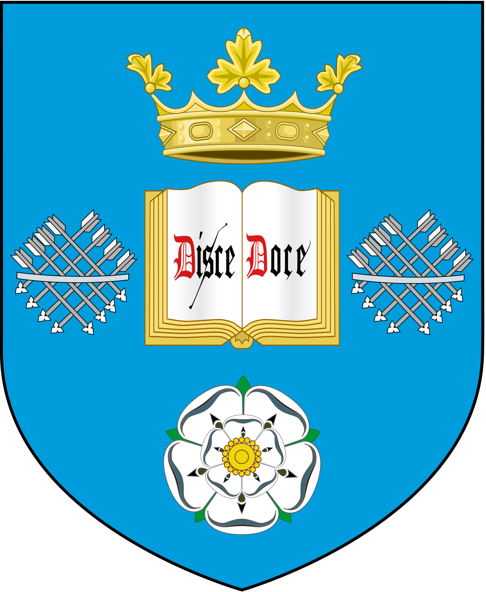

Foundations of Computer Science
In this module we focus on developing mathematical concepts and techniques that have a foundation importance to computing.
In the first part of Semester 1, Weeks 1-6, we looked at Propositional Logic, Sets, Predicate Logic and Boolean Algebra.
At first this module seemed not important, as I just wanted to focus on programming ,but in the later weeks I realised how important that module was actually.
This module is linked to COM1005 where we had to put the knowledge from COM1002 to use.
When I finally understood all the new concepts I started to really like this module, because the problems became fun to solve.
On the right side you can see an example problem.
Can you figure it out?
In the second part we look at topics such as Functions, Relations, Proof by Induction, Proof by contradiction and Proof strategies.
As we have not finished this part of the module yet, I cannot give too much of an opinion, but the slides are very interesting.
To see what the slides contain you must join us next year.
Click on crest to view the official module page
